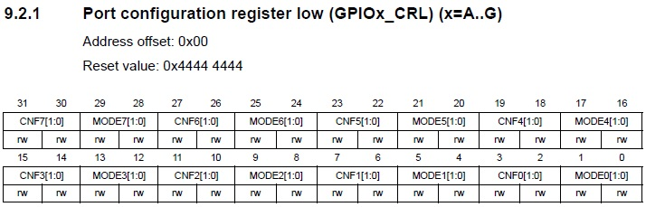
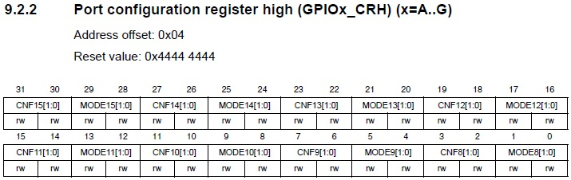
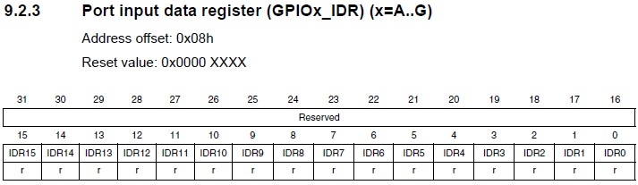
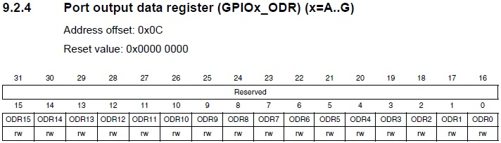
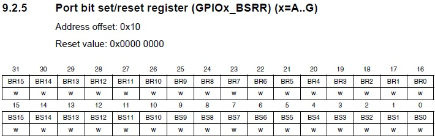
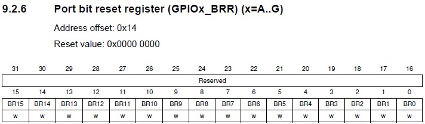
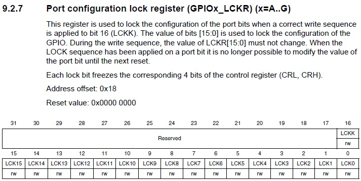

Чтобы уметь правильно управлять портами ввода-вывода, надо изучить регистры контроллера, которые отвечают за настройку и управление текущим состоянием данной периферии. Часто embeddet-программисты не раз использовали биты настройки портов, но зачастую никогда полностью данные регистры не изучали. Поэтому нужно восполнить этот пробел.
Все нижеперечисленные сведения справедливы для младших моделей микроконтроллеров STM32, например для STM32F103C8T6 (BluePill).
Регистры управле
Для каждого порта ввода-вывода, имеющегося в контроллере, существует по 7 регистров.
В библиотеке CMSIS эти регистры сгруппированы в такую структуру:
// General Purpose I/O
typedef struct
{
__IO uint32_t CRL;
__IO uint32_t CRH;
__IO uint32_t IDR;
__IO uint32_t ODR;
__IO uint32_t BSRR;
__IO uint32_t BRR;
__IO uint32_t LCKR;
} GPIO_TypeDef;
Регистры CRL и CRH
Первые два регистра являются частями регистровой пары настройки ножек портов (Config Register Low и Config Register High).
Так как ножек у портов всего 16 и для каждой ножки создано 4 бита настройки, то получается, что нам требуется всего 64 бита, вот и получилось два 32-х битных регистра — младший и старший.
Первый регистр — младший, который отвечает за настройку ножек портов от 0 до 7

Второй регистр — старший, который отвечает за настройку ножек портов от 8 до 15

Теперь рассмотрим назначение битов битовых полей данных регистров для отдельно взятой ножки (далее x - это буква порта A, B, ... E, а y - номер ножки).
MODEy[1:0] (Port x mode bits): битовое поле настройки режима работы ножки y порта x.
CNFy[1:0] (Port x configuration bits): битовое поле настройки ножки y порта x.
В случае использования ножки на вход:
В случае использования ножки на выход:
Регистр IDR
Следующий регистр — регистр входных данных (Input Data Register)

Каждый бит данного регистра содержит состояние соответствующей ножки порта. Доступен только для чтения.
Регистр ODR
Следующий регистр — регистр выходных данных (Output Data Register)

В режиме выхода ножки порта с помощью сброса или установки бита, соответствующего данной ножке, мы меняем её состояние. Биты доступны как на чтение так и на запись. Поэтому мы также можем узнать текущее состояние ножки, настроенной на выход.
В режиме входа ножки мы устанавливаем направление подтяжки резистора
0 — резистор подтянут к общему проводу,
1 — резистор подтянут к шине питания.
Регистр BSRR
Следующий регистр — специальный 32-битный регистр атомарной установки или сброса ножек порта (Bit Set/Reset Register)

Данный регистр интересен тем, что мы можем сразу устанавливать или сбрасывать отдельные ножки порта в одну операцию. С помощью регистра ODR мы сначала его полностью читаем, если нам нужно не тронуть уровень других ножек, затем устанавливаем бит в считанном слове, а затем результат обратно записываем в регистр.
Старшая половина регистра (именуемая BR, Bit Reset) отвечает за сброс ножек, младшая (именуемая BS, Bit Set) — за установку. Ноль в записываемом значении регистра не имеет эффекта, поэтому уровни ножек, биты которых установлены в ноль не тронутся, а значения ножек, биты которых установлены в 1 либо сбросятся либо установятся в зависимости от того в каком полуслове они будут находиться.
Другими словами, битовое поле BRy (старшая половина регистра), где y — номер ножки порта, работает следующим образом
А битовое поле BSy, где также y — номер ножки порта, работает следующим образом
Регистр BRR
Следующий регистр — регистр сброса ножек порта (Bit Reset Register)

Данный регистр работает аналогично предыдущему, но здесь только биты сброса ножек.
Регистр LCKR
Следующий регистр — регистр защиты конфигурации порта (Lock Register)

Биты данного регистра предназначены для защиты ножек портов от изменения. Если мы хотим защитить какие-то ножки от записи, то мы записываем в соответствующие им биты данного регистра, находящиеся в младшем его полуслове, единицы, остальные биты оставляем в нулях. Затем при помощи специальной комбинации над битом 16 — LCKK мы производим применение блокировки. Данная последовательность следующая: записываем в данный бит 1, затем 0, затем опять 1, затем данный бит считываем дважды, первый раз должен считаться 1, второй — 0. Если всё так, то значит мы защитили нужные ножки.
Важное примечание
Стоит сказать, что у микроконтроллеров высших моделей (F4, F7 и т.д.) регистры для настройки портов другие. Например, при работе с CMSIS с контроллером STM32F407VG, установленный на плате Discovery 4, то там регистры будут другие. Надо всегда помнить, что переносимость кода на CMSIS на другие контроллеры не всегда имеет место.